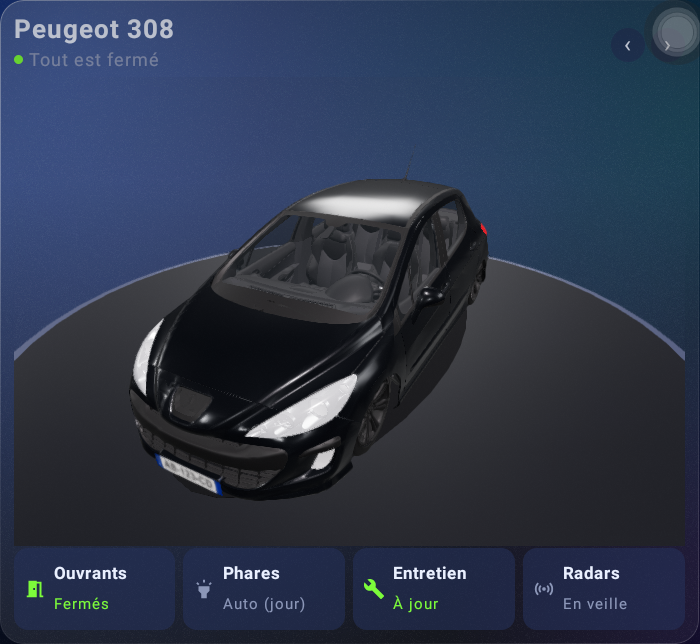
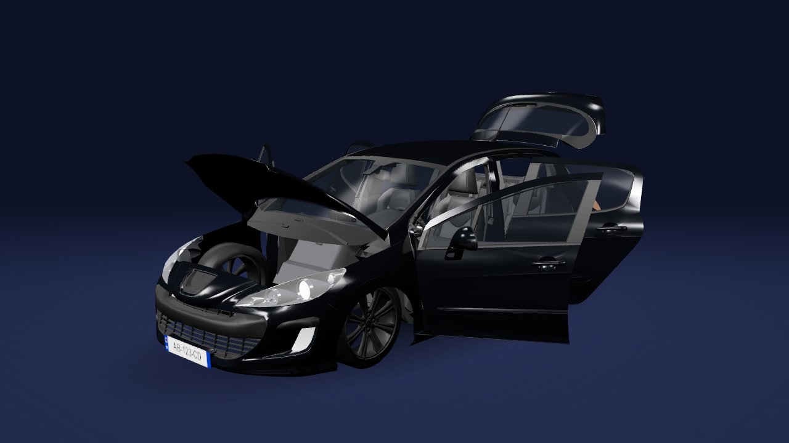
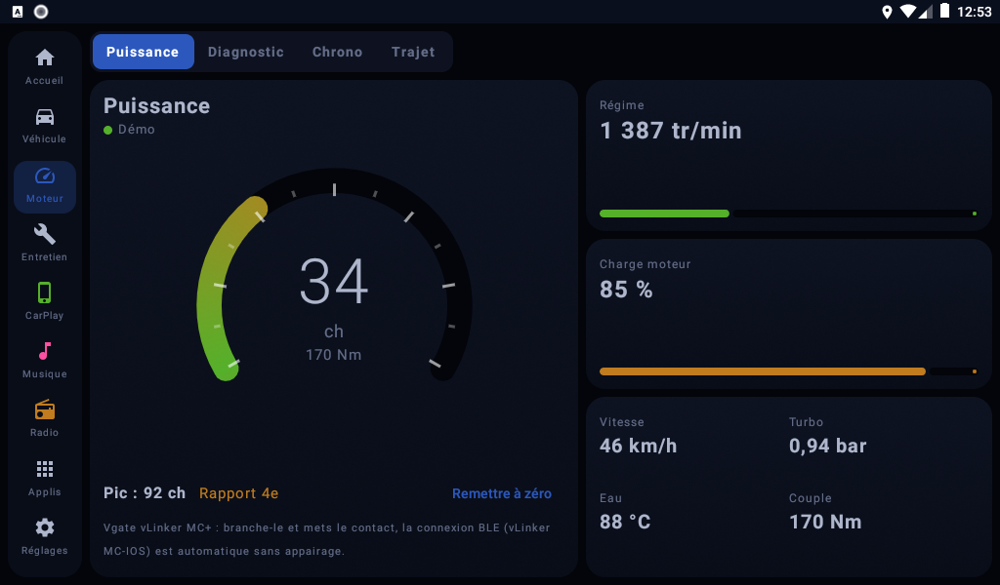
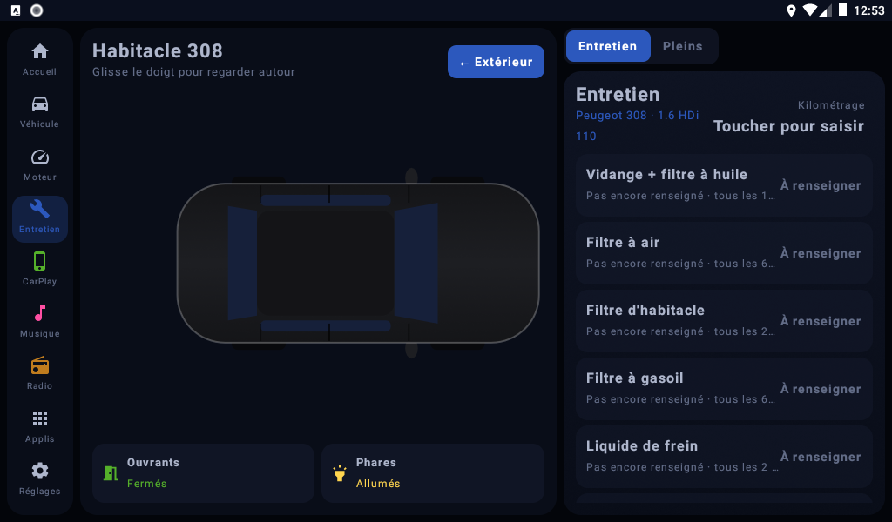
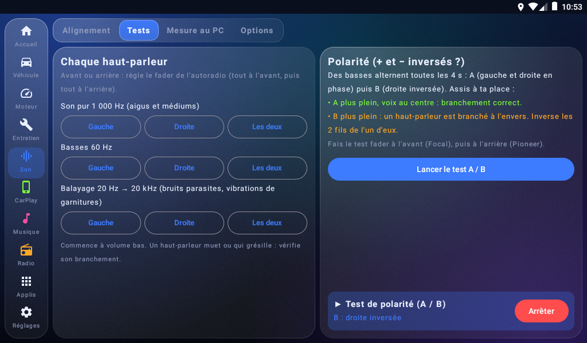

Lanceur 308
Un écran d'accueil pour l'autoradio de ma voiture
Pourquoi ce projet
Ma Peugeot 308 de 2007 a un autoradio Android chinois (un FYT). L'écran d'accueil d'origine est moche et n'affiche presque rien de la voiture, alors que l'autoradio reçoit pourtant plein d'informations du bus CAN : portes, coffre, température dehors, tension de la batterie...
J'ai donc décidé de faire mon propre lanceur : une appli Android qui s'affiche au démarrage et qui montre ma voiture, la vraie, avec sa couleur et sa plaque.
Ce que ça donne
Les photos ci-dessous sont des captures prises directement sur l'autoradio. Quand j'ouvre une porte, elle s'ouvre aussi à l'écran.


Les onglets
À côté de l'accueil, j'ai ajouté les choses dont j'avais besoin au quotidien. Un onglet Moteur, qui lit un petit boîtier OBD branché sous le volant (puissance, régime, codes défaut, état de la batterie). Un onglet Entretien pour ne plus oublier la vidange et suivre ma consommation. Et un onglet Son pour régler l'autoradio, parce que sur le siège conducteur on n'entend pas les enceintes de la même façon que les passagers.



Ces trois captures viennent de l'émulateur Android sur mon PC, en mode démo avec des données inventées. L'émulateur ne sait pas afficher la 3D, c'est pour ça que la voiture est vue de dessus.
Ce qui a été compliqué
Le plus dur a été de comprendre ce que l'autoradio transmet vraiment. Il n'y a pas de documentation : j'ai dû écouter ce qui passait sur le CAN et tester porte par porte. Certaines infos n'arrivent tout simplement pas (les feux par exemple), donc l'appli allume les phares d'après l'heure du coucher du soleil. Les ceintures, je suis encore en train de les tester.
J'ai aussi écrit quelques outils sur PC pour travailler plus vite : on se connecte à l'autoradio par le Wi-Fi (ADB) au lieu de brancher un câble à chaque fois.